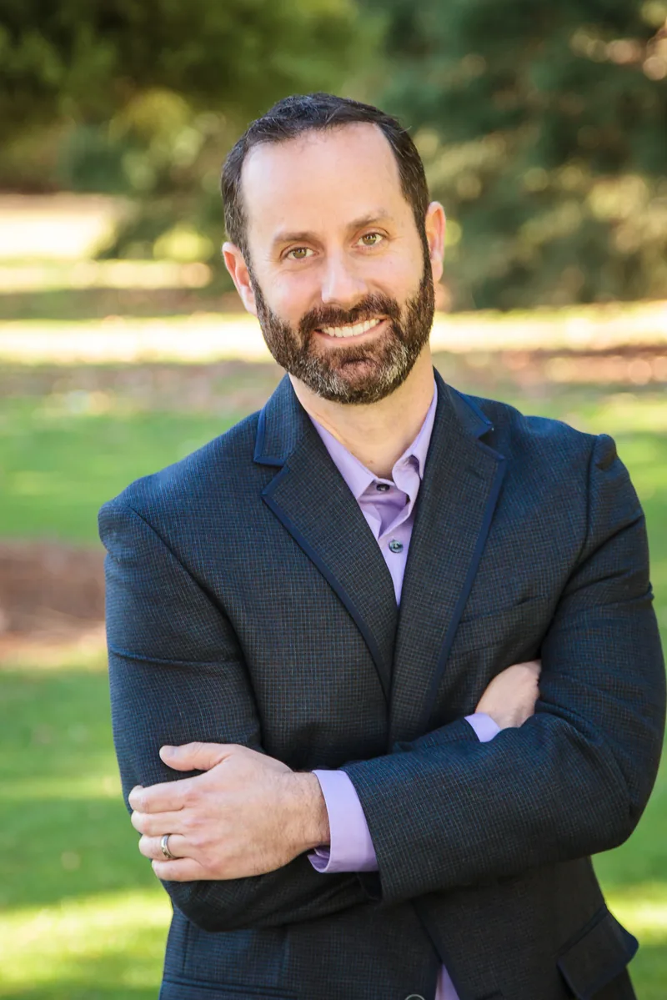

Dr. Kevin Segal is a Chiropractic Physician with over 25 years of clinical experience, serving patients in Milwaukie and the greater Portland area. He founded Oregon TMJ to address a gap he kept seeing in his practice — patients who had been struggling with jaw pain for years without finding lasting relief.
His approach is grounded in the relationship between the jaw, the cervical spine, and the surrounding muscles. By treating these structures together rather than in isolation, he helps patients address what is actually driving their symptoms — not just managing them.
Dr. Segal calls himself a TMJ enthusiast — not just because of his clinical focus, but because he has personal experience with jaw dysfunction and understands what it means to live with it.
Education & Training
Dr. Segal earned his Doctor of Chiropractic degree from the University of Western States in Portland, Oregon — one of the leading evidence-based chiropractic colleges in the nation. He has been in active clinical practice since 2001.
His TMJ-specific training includes advanced continuing education in intraoral muscle technique through TMJ Massage Therapies and through the University of Western States. He continues to pursue TMJ-focused continuing education regularly, staying current with evolving approaches to jaw dysfunction and conservative musculoskeletal care.
TMJ Focus & Clinical Approach
Dr. Segal's focus on TMJ disorder grew out of 25 years of observing what was missing in his patients' care. Many came to him after years of treatment with dentists, specialists, and other providers — having tried night guards, Botox, physical therapy, and medication — without finding lasting relief.
His chiropractic approach to TMJ addresses the condition from a whole-body perspective:
- Jaw joint mobilization — restoring normal mechanics and reducing inflammation in the temporomandibular joint
- Intraoral muscle work — hands-on soft tissue treatment of the muscles inside and around the jaw that are often the primary source of pain
- Cervical spine treatment — addressing the neck dysfunction that frequently contributes to or perpetuates TMJ symptoms
- Posture correction — improving forward head posture and upper back alignment to reduce the chronic load on the jaw and neck
- Laser therapy — Class IV laser applied to reduce inflammation and accelerate tissue healing when indicated
- Exercise and home care — patient-specific strategies to support recovery between visits
A Personal Connection to TMJ
TMJ pain is not abstract for Dr. Segal. As a teenager, he underwent corrective jaw surgery intended to address a significant overbite and prevent future TMJ problems. The surgery ultimately contributed to jaw dysfunction of his own — giving him a firsthand understanding of what his patients experience.
That experience shapes how he approaches every patient. He knows what it feels like to have jaw symptoms that are difficult to explain, difficult to treat, and easy to dismiss. He takes the time to listen, to explain clearly, and to develop a plan that makes sense before treatment begins.
Treatment Philosophy
"I take a calm, thorough approach with every patient. Before we do anything, you'll understand what's going on and have a clear plan. I call myself a TMJ enthusiast because I genuinely get excited about helping people with this condition — and about continuing to learn everything I can about it. Your questions are always welcome."
— Dr. Kevin Segal, Chiropractic Physician
About the Practice
Oregon TMJ is located at 6501 SE King Road in Milwaukie, Oregon — easily accessible from Portland, Lake Oswego, Clackamas, Happy Valley, West Linn, and Oregon City. Dr. Segal sees patients Monday, Wednesday, and Thursday, and is available by text, voicemail, or email on Tuesday and Friday.
The practice is in-network with Regence, PacificSource, Providence, Moda, Kaiser, United Healthcare, Cigna, Trillium OHP, Care Oregon OHP, Medicare, and VA. PIP coverage for auto accident patients and Workers Compensation on a case by case basis are also accepted.
Ready to Work With Dr. Segal?
Book online or call us — we'd love to help you find lasting relief from jaw pain.
Book an Appointment Request Information